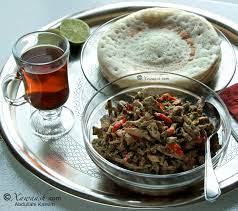

Recipes

Canjeelo
This is a delicious Somali breakfast made of outs flour
This recipe is call Canjeelo
Ingredeints
STEPS
1.Get a 250g of Outs flour
2.Get a pot
3.Pour a half litre of water into the pot
4.Put the flour into the water
5.Mix the water and the flour together
6.Beat it on to your palm let it make a sound
7.Get a pan
8.Put the pan on the fire
9.Get a class
10.Pour 50 ml of liguid flour onto the pan
11.Then flatten the liguid onto the pan roundly
12.Cover it for a minut
13.keep so until you get how many caljeelo you wanted
STEPS 2 for liver
1.Now grab the gout liver
2.Chop the liver in small pieces
3.Get an onion,pepper and bell pepper
4.Get a litle salt
5.Put all ingeriedents into the pan and cook for 5 minutes
6.Now the breakfast is ready to serve